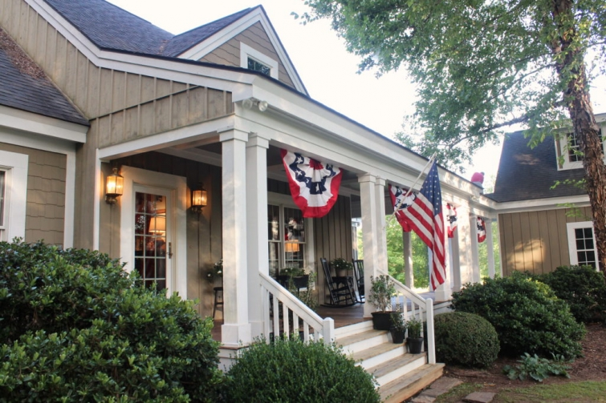
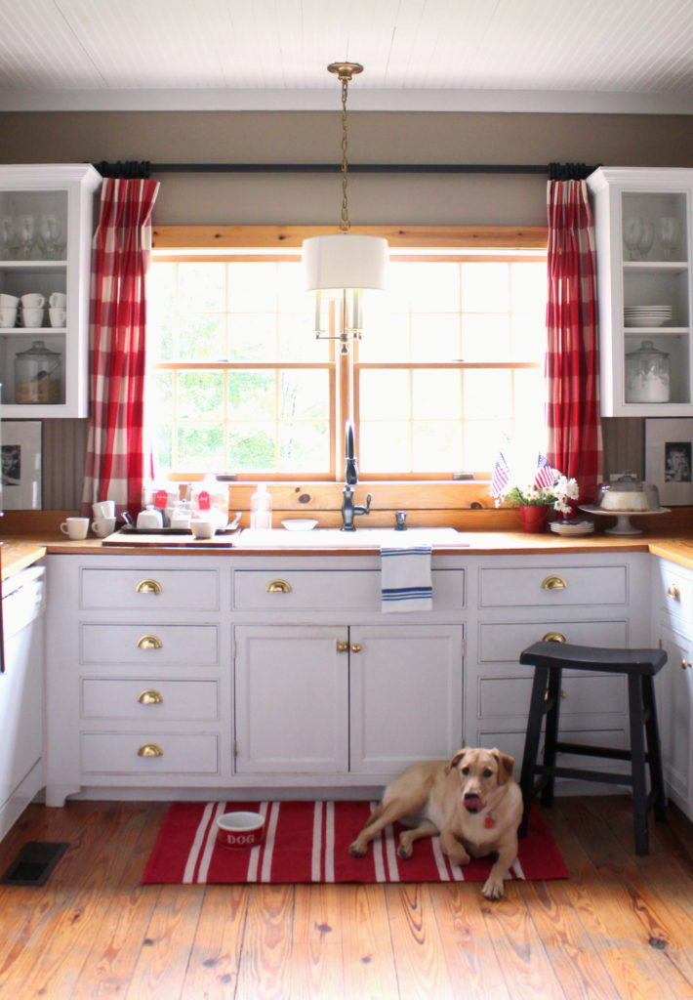

.png)
.PNG)
.PNG)
.PNG)
.PNG)
.PNG)
.JPG)
.JPG)
.PNG)
.PNG)


Ignore my husband up on the roof there.  He was cleaning off branches that fell from the trees.  Today I want to talk about something different. I want to talk about music.  One of the things our daughter says she loves most about our home is that there is always always music playing around here.
When our 20 year old stereo finally quit working, we had to make a trip to Best Buy and purchase a new one immediately. ¬†It is almost as essential to our family as the kitchen sink. üôÇ

And every single morning..without fail…the first thing that pops into my head is a song.
I am not joking.

And it’s not because there is a song playing on the clock radio. ¬†Thankfully that doesn’t even come on anymore since my husband and I are both retired. ¬†(And when we were working, we woke to the news of¬†Morning Edition on NPR every single morning.)

You would think my brain would first think…What do I need to get done today?…or…What do we want for breakfast?…or…Thank you Lord for another day. ¬†(That’s the second thought each morning. üôÇ )

But no, it is always like a radio turns on inside my head each morning when I wake.

Sometimes it is a Disney song…
I can show you the world…
Be our guest! Be our guest! Put our service to the test...
I’ve been standing at the edge of the water long as I can remember…

Sometimes it’s a James Taylor song…
In my mind I’m goin’ to Carolina. Can’t you see the sunshine?…
You just call out my name, and you know where ever I am…
Just yesterday morning they let me know you were gone…

But it’s not limited to just their music, and it is not connected to what I have been listening to on the previous day. I do listen to both Disney and James Taylor Pandora stations along with Keb Mo, Ella Fitzgerald, Louis Armstrong, Carole King, classical, and assorted others. (And between November and January it stays on Christmas music. üôÇ )

(Yes, I rearranged the plates in the plate rack for those of you that notice the details around here. üôÇ )
For the last few days I have had an Aaron Copland station playing on Pandora. I also purchased some digital music from Amazon that was perfect for Independence Day. ¬†It had a great mix of marches with my two favorite Copland pieces mixed in. If you are looking for music for the holiday next year, I recommend this one. üôÇ

I tell you all of this because you won’t believe the very first song that popped into my head when I woke up on the 4th of July yesterday. It wasn’t God Bless America, or This Land is Your Land, or even¬†The Star Spangled Banner…songs that I had been listening to over the course of the last 2 days. Nope it was a song I hadn’t heard in years…

It was…
American Pie!
You know…the old Don McLean song…
Bye, bye Miss American Pie.  Drove my Chevy to the levee but the levee was dry.

Sort of appropriate for the 4th of July in title, but the lyrics are supposedly about the 1950’s, Buddy Holly’s death, the Beatles, rock ‘n roll, and all sorts of other things. ¬†Anyway, I just thought that was funny for it to be the song in my head when I woke up yesterday. ¬†Do you wake with a song in your head, or am I the only crazy person that does that? üôÇ

Okay, enough about music.  We better talk a bit about the summer decor here before we finish the tour today! You know red, white, and blue are always so fun to use because the color scheme is such a cheerful one, and flags add an easy and inexpensive touch everywhere. Summer decorating should be easy.

Here is another shot of the table as I had planned it for our celebration….white Pottery Barn caterer’s plates, red salad plates from Home Goods, bubble glasses from Pottery Barn, (from our daughter’s graduation party) napkins that are actually old kitchen towels from Sur la Table, sparklers and Table Topics cards used as place cards on the plates, and striped paper cups holding Hershey’s candies and Tootsie Rolls packaged in red, white, and blue for take home treats.

Here’s a quick shot of only part of the table as it actually turned out. ¬†We added a few extra guests, and I didn’t have enough of the blue gingham napkins/towels so I decided to just use paper polka dot ones from Target instead. And I had to use a different size Table Topics card because I didn’t have enough of the larger ones. ¬†Regardless, it still turned out festive for the occasion. üôÇ (The rest of the food and all the drinks were over on the kitchen counter for buffet style serving.)

I hope your 4th of July was fun and festive too! ¬†Now it’s time for me to get back to work on painting outside while the sun is shining (and hot as fire today. üôÅ ) I’m taking you out the side door so that you can see the last of the red, white, and blue here.

And here is one last look at our house all dressed for the 4th.
The new buntings really dressed her up!
(I plan to buy one more for next year to put on the left end of the porch.)

Until next time…

p.s.  The song in my head when I woke today was Summer Breeze (the old Seals & Crofts song.)
p.p.s. I made the Cream Cheese Pound Cake for our party. ¬†Daughter opened the door while it was baking, and it fell…looked just like a crater. üôÅ
(Still tasted good though! üôÇ )


.PNG)
It is lovely. I liked your home tour. This is awesome.
Oh, I’ve missed you this summer. So good to hear from you. I love that you wake with a song in your head, what a great way to start the day. Hope the painting is going well and all the family are healthy.
Love this house, getting ready to build, I would love to have this floorplan, thanks
Just love your kitchen. What a classic and fabulous look. Also, the entire VintageStyleLiving.com staff loves your blog!
Thanks for sharing!
Checked on your bog today on a whim and here you are. What a wonderful surprise! Let me say here I loved the garden tour in July; I love garden tours. Your home is delightful, love the red and have splashes of it in my home. Look forward to checking back more often, know you’re still working on the house, no pressure!
Some great songs going around in my head now Kelly …Going to California (love James Taylor and Carole King) American Pie and Summer Breeze (what a perfect song for lazing in the sun!) to name just three! We definitely like similar music üôÇ Your house as usual looks splendid decked in red white and blue.
Rosemary
So what kind of sound system did you go with? I want one for our house, but don’t know what to buy. The smallish stereo quit working and it was a radio, cd player, that you could plug your ipod into. My hubby had rigged the speakers over the hutch in the kitchen so they would be hidden. Thanks for your help:)
There is always music playing in our home too! And lucky for us, both of our sons are wonderful musicians so it’s often live. I love your home, Kelly! Thanks for sharing another wonderful post.
What a happy way to wake up! Your house looks amazing, as always and I love all of the red, white and blue. The buffalo plaid curtains in your kitchen look perfect! Happy Sunday!
I noticed! Your home is BEAUTIFUL!!
Kelly! I love it when I see that you have put up a new post and, as always, they are great! We have been spending more time at our NH place and this week’s weather has been great. Our MA home needs exterior work, but finding contractors is difficult and my husband has neither the time or desire to do it. While it may not be fun, for you, your projects are getting done!
Enjoy the summer, Cindy
GREAT post!!! I am a professional musician, and yes, I do wake up with a song in my mind most mornings….some of which I can find later in the day and some of which I must have “dreamed” up because Google has never heard of them :^0 I do hymn arrangements pretty regularly in my dreams, and they often work out just right when I get to the piano…bingo!!
Your reds, whites and blues are beautiful…
especially the reds :^)
Funny story:
We hang bunting over our front door for Memorial Day through Labor Day. This year it may be there until Christmas, since Jenny Wren built a nest right in the center dip of the fabric :^)
Blessings,
J
Lovely as usual. I get so many ideas from your gatherings, that I want to use. My FIL turns 80 next month, and we are planning a party. I’m planning to use some TABLE TOPICs on the tables — maybe up to 40 folks, relatives & friends, from the northern mid-west and south–so I thought those might be a good to have. I might even sprinkle a few of my own in there in reference to my FIL, to entice folks to share memories, stories.
What a wonderful surprise to find your beautiful home all decked out for Independence Day! The red, white and blue can’t help but make you smile. Our den is red, white and blue all the time and I just love it. I can’t think of a better way to start the day than with a song! I often wake up with a song myself. So glad to enjoy a summer “visit”. Your home looks terrific, as always! üá±üá∑üá±üá∑üá±üá∑
Kelly,
I do sometimes wake up with a song in my head—all of the songs you mentioned are on our playlist. Love James Taylor! Your home always makes me smile. It’s so pretty and welcoming and your table and assorted jars are always filled with yummy things! üôÇ
Hope your 4th was fun!
xo,
Karen
I so love your home and style! I’ve seen the upright piano in lots of your posts. Do you play? Or does anyone in your family? If you have mentioned this, I guess I missed it.
Yes! We put speakers on the main level of our home and it’s the first thing we turn on in morning and last thing in the evening. We play French Cafe music in the morning. We haven’t a clue what they are singing about but alongside a cup of coffee it’s so peaceful üòÑ
You must have a household sound system.
I don’t put it on because I am all over the house and wouldn’t hear it.
Lucky you can emjoy.
Gabby is pretty surrounded by the red/white check.
Any hints on buying bunting would be appreciatrd, ie what fabric?
Glad to hear from you!
My day starts with praise and then as I get fully awake tunes start playing in my head. I love all types of music and enjoy music of the season. I always remembered you said you like Christmas music all year long and so do I. I do not like when a tune gets stuck when I am trying to go to sleep!! But often does– I read to get it to stop, place your tongue on the roof of your mouth and it will go away!! Truly enjoyed all your 4th decorations! I keep mine up until Labor Day. Enjoyed having my family here at the lake– my daughter from Orlando brought boxes of sparklers and I got so excited and ran to the dinning room to add them to my tablescape!! I told her that you had them on your table!! She just laughs at me and says I am a Kelly Want a Be!! Yep! That’s about right!! üíïüôèüíï
Your home looks fabulous in all its patriotic attire! Since you like a variety of music, I was going to suggest Crossroads Radio-a station that we have on our blog. It’s a mix of beach music, oldies, blues, boogie, and anything else we like! (My husband is a retired radio personality who still likes to keep his finger in radio!)
I do love those buntings on the front of your home….so festive! üòâ
Everything is always amazing. Love the tablescape too. The bunting looks fabulous, what a great 4th display.
So love everything you did to dress up your home for the wonderful summer holidays! Would you mind sharing where you got the conversation cards for this table display? Also, you mentioned that the bubble glasses were available from amazon – would you mind sharing a direct link for them so that when we order them, you get credit for this? I want to be sure to get the right ones. Um, I think of the glasses shown here as hobble bumps — I was interested in the ones with the little bubbles in the glass itself….. does this make any sense???
Best treat of all – seeing the last two posts from you as you have sorely been missed!!! Thanks for inspiring and adding a song to my day! BTW, I woke up humming Neil Diamond’s “America”! Frankly, a day without music is like a day without sunshine!!!
Hugs from the Rockies, Pippa
Hello,
In all honestly I wake up and begin to think immediately about making my French press coffee. I so enjoy that first sip of the morning. Time to change habits and sing a song.
I may not think it but I certainly feel grateful each morning.
Love the bunting. So patriotic. American Pie is one song I hear and it stays with me all day. My husband grew up with music always playing in the background. Hence, so our house has music streaming from our Echo Dot, or Bose, or Pandora, or computer filled with tons of music sent by a good friend who was a local dj. The grandchildren have acquired an appreciation of music from other generations.
OMGoodness! This is so me!!! When you taught school did it make you crazy when you had a child in your class who made noises? I always told kids they couldn’t hum because it messed up the songs I always had playing in my head. Yes, I always have music going in my house…. and if not, it is definitely playing in my head! Kelly, everything looks so beautiful and festive. I love the checks and polka dots. Your chalkboard is awesome! We used to have a huge July 4th party. This year our daughter had it because the town’s fireworks are perfect to view from her house. (We are still trying to recover from our son’s wonderful wedding. Life is changing so fast!)I am so glad you are back!!!
What a wonderful insight into your life! I always know I am overwhelmed or blue when I realize that I haven’t listened to music or sang to songs in awhile.
I also get songs in my head but as an older mother with an 8-year-old lately television show songs seem to stick the most (can you sing Sponge Bob Square Pants, Sponge Bob Square Pants!).
Thanks for the posts. Love seeing them.
I did a patriotic playlist on my blog and I indeed added the Don McClean song. Love that song. Love the buntings on your porch they look fabulous!
Your home looks so beautiful all dressed for the 4th! I always have songs in my head as well. Summer Breeze brings back so many childhood memories…now I think that one will be stuck in my head! Have a great day!
Shelley
My song for this morning (July 5) was Happy Birthday! It was mine. Your post was a pleasant and timely gift. They are always so inspirational. Thanks for taking the time out to keep us updated.
Your house looks wonderful and warm, inside and out! Sure am missing your frequent posts, but understand your HUGE painting process is a priority:). Thanks for the July 4 peek!
Really cute! Great job!!
Love the bunting on the front of the house.
I used to play music all the time too. Not so much anymore…not sure why.
I make a pound cake similar to yours…hunted for a long time to get it just right. My favorite cake.
Thanks for sharing.
Nope, not a song in my head person. In fact, I don’t listen to music very often, and don’t even like it on in the car. I find I can’t concentrate with it. I do like a good marching band tune or instrumental music. Husband is a fan of the oldies, and while some of it is nice, he seems to like a lot of the ones I DON’T like. My absolute favorite song is “At Last” by Etta James.
You must have had a nice gathering for the 4th. Nice to have extra guests sometimes to invigorate the day! We watched our 6 yr. old grand daughter ride a float in the local parade, then spent the day and evening sitting by the lake on the deck we just finished. Pup was worn out from the scary parade (she was not a fan!) and so were we!
We must be from the same era!! Love American Pie-i knew every verse by heart! Summer breeze oh my!!!!